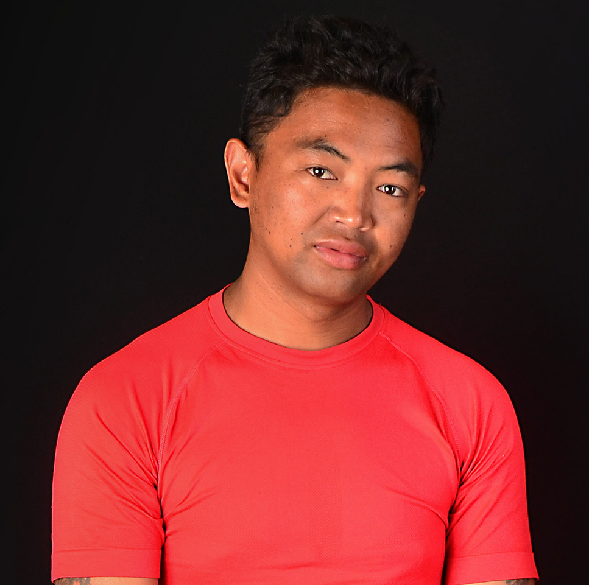

⌘
01
Intégration front-end
Intégration de maquettes en HTML, CSS/SCSS et JavaScript, avec une attention particulière à la fidélité visuelle et au responsive.
Disponible pour des missions freelance
Développeur Front-End & intégrateur Web freelance, je réalise des interfaces responsives, personnalisées et soignées, de l’intégration de maquettes aux développements sur mesure.

01 — À propos
Avec une expérience en intégration de sites et en personnalisation de thèmes, j’accompagne les équipes et les entreprises dans la réalisation d’interfaces modernes, adaptatives et cohérentes avec leurs maquettes.
Mon approche associe rigueur front-end, attention à l’expérience utilisateur et bonnes pratiques d’optimisation. Je peux intervenir sur un projet complet ou renforcer une équipe web sur des besoins ciblés.
Échangeons sur votre besoin02 — Services
Des prestations adaptées à vos maquettes, à votre CMS et aux objectifs de votre site.
01
Intégration de maquettes en HTML, CSS/SCSS et JavaScript, avec une attention particulière à la fidélité visuelle et au responsive.
02
Personnalisation de thèmes, ajustements d’interfaces et intégration de composants adaptés à vos besoins.
03
Corrections responsive, optimisation de l’expérience utilisateur et accompagnement sur les bonnes pratiques SEO front-end.
04
Développement d’interfaces et de composants personnalisés selon vos maquettes, vos contraintes techniques et les besoins de votre activité.
03 — Sélection de projets
Ces trois concepts sont des démonstrations de portfolio à réaliser. Remplacez les descriptions par les liens, captures et résultats réels une fois les projets terminés.
Une page d’accueil responsive avec sections éditoriales, services et contact, intégrée à partir d’une maquette.
Demander une réalisation similaireUne proposition d’interface boutique : mise en avant des produits, cartes de produits et adaptation mobile.
Parler de votre boutiqueUn site de présentation de services avec une hiérarchie claire, des appels à l’action et un design responsive.
Créer votre site vitrineÀ noter : les aperçus ci-dessus sont des maquettes illustratives, pas des sites clients déjà livrés. Présentez-les comme projets personnels lorsque vous les aurez réellement développés.
04 — Compétences
Technologies et domaines mentionnés dans mon parcours professionnel.
05 — Parcours
Les dates et intitulés sont repris du CV et des informations de mise à jour précédemment communiquées.
Intégration de sites, interfaces responsives, personnalisation de thèmes et optimisation de l’expérience utilisateur.
Développeur Front-End / Intégrateur Web : intégration de sites, développement de thèmes personnalisés, responsive et optimisation multi-navigateurs.
Intégration de sites responsives à partir de maquettes et CMS, personnalisation de thèmes et optimisation SEO / UX.
Développeur Front-End / Intégrateur Web : intégration de sites, thèmes personnalisés et interfaces responsives.
06 — Contact
Besoin d’un intégrateur pour votre agence, votre site vitrine ou votre boutique e-commerce ? Contactez-moi pour discuter de vos objectifs.
E-mail, téléphone, LinkedIn et GitHub pour faciliter les échanges autour de votre projet.